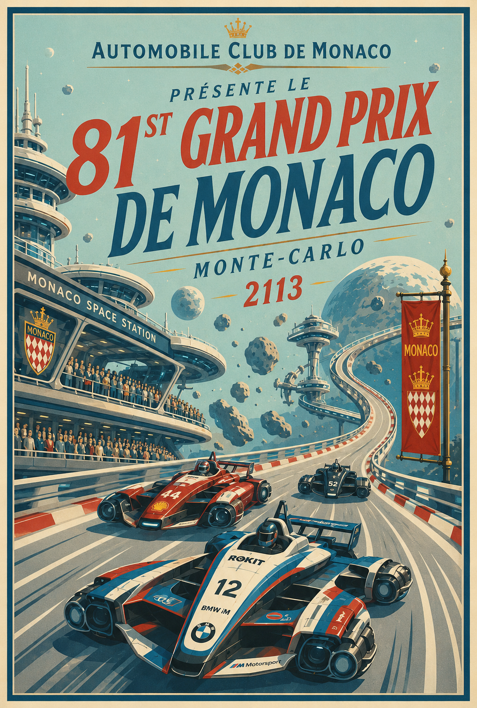
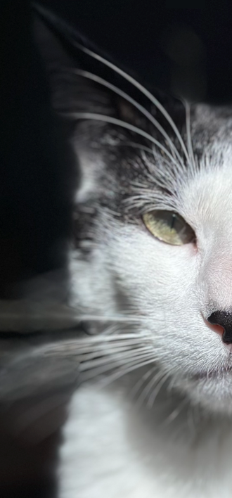
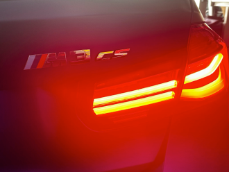

Digital Sandbox · Personal Visual Archive
Digital Sandbox
A curated space for visual experiments, photography, illustration, and AI-assisted image studies that sit outside my product design case studies. This page is intentionally image-led: a place to show creative range, art direction, composition, mood, and craft without forcing every piece into a formal work story.

Personal Work · Visual Experiments
Gallery
A curated image archive for artwork, photography, AI-assisted visuals, and visual experiments that sit outside my product design case studies. The work here is less about process documentation and more about composition, mood, art direction, and creative range.


